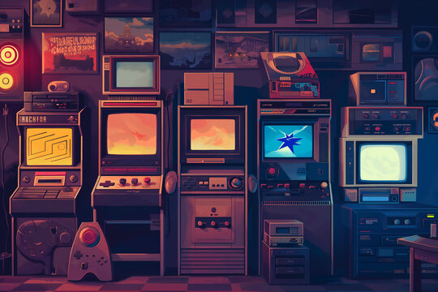

MiniJeux est une collection de jeux développée en Python, conçue pour explorer les concepts fondamentaux de la programmation tout en créant des expériences ludiques. Le projet regroupe plusieurs jeux classiques : un jeu de devinettes, un morpion, et le jeu des allumettes.
Chaque jeu propose différents modes de difficulté grâce à l'implémentation d'intelligences artificielles de différents niveaux. Les joueurs peuvent ainsi s'affronter contre des robots faciles, moyens ou difficiles, offrant une expérience progressive et stimulante.
Le projet est entièrement développé en Python, un langage particulièrement adapté pour l'apprentissage de la programmation et le développement d'algorithmes. Sa syntaxe claire et sa grande lisibilité en font un choix idéal pour ce type de projet.
JSON est utilisé pour la persistence des données, notamment pour sauvegarder les scores, l'historique des parties et les paramètres de configuration. Ce format léger et lisible facilite le stockage et la manipulation des données de jeu.
Description : Regroupement de mini-jeux développés en Python (Morpion, Allumettes, Devinettes), intégrant notamment des adversaires IA avec différents niveaux de difficulté.
Rôle personnel : Développement en équipe des différents modules de jeux, utilisation et suivi approfondi de versions avec Git/GitHub, et communication continue pour unifier le projet final.
Livrables : Liens vers la Pull Request de l'intégration, historique des Commits GitHub, et code source des robots IA.
Le principal défi était l'implémentation des algorithmes d'intelligence artificielle pour les différents robots. Pour le morpion, il a fallu développer un algorithme minimax permettant au robot difficile de jouer de manière optimale, tandis que les robots plus faciles utilisent des stratégies simplifiées avec une part de hasard.
Pour le jeu des allumettes, comprendre et implémenter la stratégie gagnante nécessitait une bonne compréhension de la théorie des jeux. Il a également fallu rendre les robots de niveau moyen intéressants à affronter en trouvant le bon équilibre entre stratégie optimale et erreurs occasionnelles.
Ce projet m'a permis de consolider mes bases en programmation Python, notamment sur les structures de données, les boucles, les conditions, et la gestion des entrées utilisateur. La mise en place d'une architecture modulaire avec différents fichiers pour chaque jeu a renforcé ma compréhension de l'organisation du code.
J'ai également développé des compétences en algorithmique, particulièrement pour l'implémentation des intelligences artificielles. La gestion de la sauvegarde des données avec JSON et la création d'une interface utilisateur fluide en ligne de commande ont aussi été des aspects formateurs de ce développement.